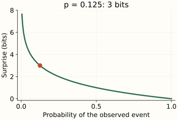
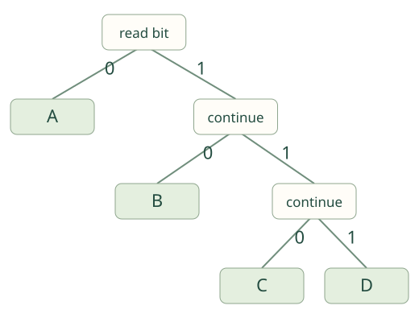

Entropy Foundations
Imagine receiving one of four symbols: A, B, C, or D. A arrives half the time, B a quarter of the time, and C and D an eighth each. Learning that the next symbol is A is less surprising than learning that it is C. Entropy is the average surprise before you see the next symbol.
We will give that statement a numerical meaning, average over this small distribution, and build a binary code that achieves the resulting average length. These are three views of the same example. The later chapters apply it to class labels and predicted probabilities.
Measure the surprise of one observed outcome
Let $p$ be the probability assigned to the outcome that occurs. We want a certain outcome to carry zero surprise and rarer outcomes to carry more. We also want surprises of independent events to add: two independent fair-coin outcomes each supply one bit, while their particular pair has probability 1/4 and supplies two bits.
The logarithm turns the multiplication of independent probabilities into addition. Using base 2 sets the unit to bits. Write $I(p)$ for an outcome’s information, or surprise:
A probability of 1/2 gives one bit; 1/4 gives two; 1/8 gives three. Halving the probability adds one bit. This measures information under the assigned distribution, not how meaningful or emotionally surprising an event is.

p = 0.125 → surprise = 3 bits.
{kind=link}
With natural logarithms, the unit is nats. One bit equals approximately 0.6931 nats. The choice of base rescales the same information quantity; it does not change which distribution has higher entropy. The D2L information-theory chapter connects surprise and logarithmic units.
Average by how often each outcome occurs
Return to A, B, C, D. Their surprises are 1, 2, 3, and 3 bits. Averaging those four numbers equally gives 2.25 bits, but the symbols do not occur equally often. A should influence the average four times as much as C because it appears four times as often.
Let $P$ name the distribution. It contains $K$ possible outcome labels; $p_i$ is the probability of label $i$, and the probabilities add to one. Weight each outcome’s surprise by its probability to obtain the entropy $H(P)$:
For our example, the four contributions are 0.5 × 1 = 0.5, 0.25 × 2 = 0.5, 0.125 × 3 = 0.375, and another 0.375. Their sum is 1.75 bits per symbol. A rare symbol can be individually surprising without dominating the average.
| Symbol | Probability | Surprise | Weighted term |
|---|
Entropy = 0.5 + 0.5 + 0.375 + 0.375 = 1.75 bits per symbol.
A zero-probability outcome contributes zero to this expectation because it never occurs under $P$. We define its weighted term by the limiting value of $-p\log_2p$ as $p$ approaches zero. This does not mean that observing an event assigned probability zero has zero surprise; that surprise is infinite. The cross-entropy chapter explains why assigning zero probability to a possible observation is consequential.
Turn the average into an actual code
A fixed-length code for four symbols uses two bits per symbol: A=00, B=01, C=10, D=11. But frequent symbols can receive shorter codes. Try A=0, B=10, C=110, D=111. Their lengths are exactly the 1, 2, 3, 3 bits of surprise in our example.
This is a prefix-free code: no complete symbol’s code is the start of another symbol’s code. Read bits down the tree until a leaf identifies a symbol, then return to the root. The decoder needs no separator between codewords.

14 bits / 8 symbols = 1.75 bits per symbol.
{kind=link}
The variable-length code uses 14 bits for this message, compared with 16 for the fixed-length code. Its expected length is also 1.75 bits under the stated distribution. We save bits by making the common case cheap, while paying more when C or D occurs.
Exact equality is especially convenient here because all probabilities are powers of 1/2. In general, an individual surprise can be fractional while a binary codeword has an integer length. For independent symbols from a fixed, known distribution, encoding longer blocks can bring the expected bits per symbol arbitrarily close to entropy. The codebook and message framing must be known to the decoder. Shannon’s noiseless coding theorem formalizes the limit.
The endpoints give useful checks
Among distributions on a fixed set of $K$ labels, entropy lies between zero and $\log_2K$ bits. It is zero when one outcome is certain and reaches the upper bound when all $K$ outcomes are equally likely. Our four-symbol examples give 0, 1.75, and 2 bits for certain, unequal, and uniform probabilities respectively.
This statement holds the outcome set fixed. Adding more possible labels changes the upper bound. The next chapter draws the full curve for two labels; maximum entropy asks what happens when additional constraints prevent a uniform distribution.
Use the right distribution in a machine-learning question
For a tree node, entropy can describe the distribution of labels among the rows that reach that node. For a probabilistic classifier, cross-entropy averages the surprise assigned by the predicted distribution to observed labels. The excess over the target distribution’s entropy is KL divergence. Cross-entropy includes both terms; it is not just the excess.
The reproduction script validates probability vectors, handles zero terms explicitly, checks both codebooks, and exports the figure data and seven SVGs. Use the pinned environment for the series. The scalar entropy calculation itself uses Python’s standard library.
References and further reading
- Shannon (1948): A Mathematical Theory of Communication — entropy, information units, and the coding limit.
- Dive into Deep Learning: Information Theory — surprise, expected information, and machine-learning connections.
- SciPy entropy reference — discrete entropy, relative entropy, and logarithmic bases.